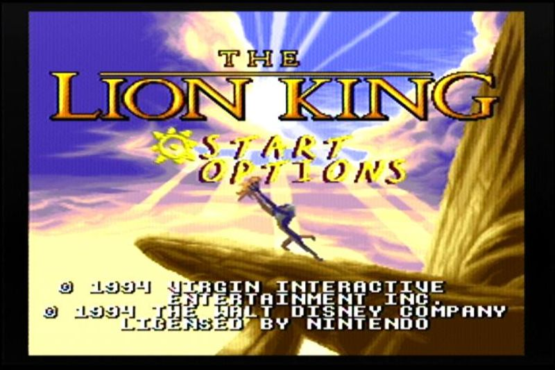

The Lion King
Явно стороннего производства картридж, а вот почему:1) Коробка сделана явно с нуля, передняя часть полностью оригинальная.
2) Задняя часть использует надписи с американского издания игры, хотя сам картридж "японский" при этом для европейской приставки.
3) Шрифт с надписью Super Nintendo по бокам отличается от оригинального.
4) Картинка на картридже оригинальная, основанная на скриншоте из игры.
5) Отсутствие значка качества Нинтендо на картридже.
6) Оригинальный шрифт названия.
7) Выемки сзади вместо отверстий.
8) Нет клейма Нинтендо и предупреждающие надписи другие.
9) Вместо полноценной ПЗУ микросхемы - кристалл со смолой сверху.
Но при всём при этом мне нравится такое оформление, несмотря на то, что оно не копирует оригинал, и даже несмотря на то, что на коробке одна из сторон перевернута.
Предположительно из всех пиратских копий Короля Льва для Супер Нинтендо является самой нечастой, хотя и через мои руки прошло минимум 3 картриджа с подобной обложкой.
В нашем распоряжении имеется теперь и полноценное издание игры с коробкой и холдером, но скорее всего чаще продавался в виде голого картриджа без коробки. Известно что подобные картриджи продавались в Индонезии.
Обращает на себя внимание тот факт, что шрифт на боковых частях коробки с надписью Super Nintendo точно такой же как на пиратском картридже с изданием игры Tom and Jerry, а также и тот факт, что обложка тыльной части перевёрнута. Скорее всего этот факт указывает нам на то, что оба картриджа выпускались одними и теми же людьми.
Три картриджа с этой игрой у меня было в руках, датировались разными числами и месяцами выпуска.
1 - выпущен не раньше 2-8 октября 1995 года.
2 - выпущен не раньше 17-23 апреля 1995 года.
3 - выпущен не раньше 4-10 сентября 1995 года.
Основана на знаменитом мультфильме от Диснея, мультфильм замечателен - и эта игра тоже. Обязательно поиграйте в неё.
Игра внутри: The Lion King.
Дополнительные фото и описание к ним: